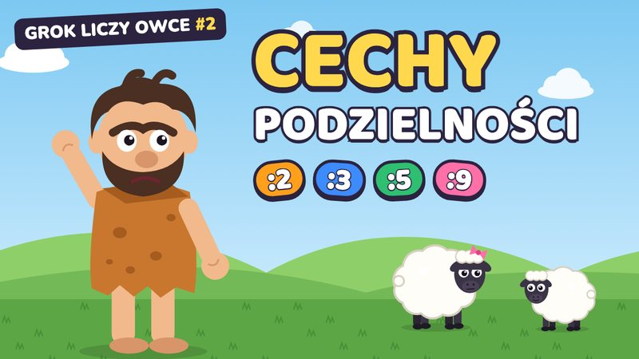
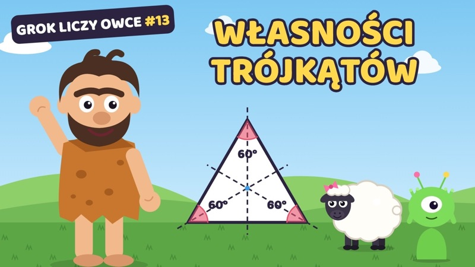

Wysokość trójkąta
Co to jest wysokość trójkąta i jak ją narysować? Grok buduje szałas z dwóch desek po 3 m i jest pewny, że szałas też ma 3 m. Wchodzi i… łup! W filmie mierzysz wysokość pionem, rysujesz trzy wysokości ekierką i sprawdzasz, gdzie leżą w trójkącie ostrokątnym, prostokątnym i rozwartokątnym.
Przykład krok po kroku
Jak narysować wysokość trójkąta opuszczoną z wierzchołka C na bok AB?
- Przyłóż ekierkę jednym bokiem do boku AB.
- Przesuń ją tak, żeby drugi bok ekierki dotykał wierzchołka C.
- Narysuj odcinek z C do boku AB wzdłuż ekierki i zaznacz kąt prosty. Jeśli ekierka nie trafia w bok, przedłuż bok AB linią przerywaną.

Poćwicz w grze: Pion Groka
Pastwisko do tego odcinka w darmowej grze „Policz stado!”. Bez logowania, działa na telefonie i na tablicy interaktywnej.
Zagraj: Pion GrokaPytania i odpowiedzi
Czy wysokość trójkąta zawsze jest pionowa?
Nie. Wysokość jest zawsze prostopadła do boku, na który ją opuszczamy, ale pionowa jest tylko wtedy, gdy ten bok leży poziomo. Jeśli trudno to zobaczyć, obróć kartkę.
Ile wysokości ma trójkąt?
Trzy, po jednej z każdego wierzchołka. W trójkącie rozwartokątnym dwie z nich leżą poza trójkątem, na przedłużeniach boków.
Inne tematy: matematyka klasa 5

Cechy podzielności przez 2, 3, 4, 5, 9 i 10 Liczby pierwsze i złożone
Liczby pierwsze i złożone
 Dzielenie pisemne krok po kroku
Dzielenie pisemne krok po kroku
 Trójkąty: warunek trójkąta, suma kątów i rodzaje
Trójkąty: warunek trójkąta, suma kątów i rodzaje

Trójkąt równoboczny, równoramienny i różnoboczny Równoległobok, romb i kwadrat
Równoległobok, romb i kwadrat